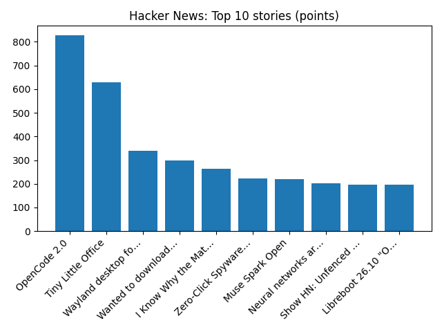

America's historic preservation law is in peril, advocates say. Here's what's at stake
NPR — Top Stories
YOUR DAILY INTELLIGENCE BRIEF · 2026-10-15
Global watch: America's historic preservation law is in peril, advocates say. Here's what's at stake, DOJ sues California to block votes from alleged noncitizens - Reuters.
Northern Virginia: News | Northern Virginia housing authority plans affordable residences at mixed-use project - CoStar, USTA Mid-Atlantic Foundation honors local leaders at Tennis Creates Gala - ALXnow.

Global coverage includes America's historic preservation law is in peril, advocates say. Here's what's at stake; DOJ sues California to block votes from alleged noncitizens - Reuters; Suspected fly tippers shamed with online photos. Local coverage includes News | Northern Virginia housing authority plans affordable residences at mixed-use project - CoStar; USTA Mid-Atlantic Foundation honors local leaders at Tennis Creates Gala - ALXnow.

Jacques de Sieyes
Jacques Edouard de Plan de Sieyes de Veynes (21 July 1891 — 25 June 1949) was a Legion of honor decorated captain who acted for de Gaulle against Vichy. His parents were Raoul de Plan de Sieyès de Veynes (1848 - 1944), lawyer, Joan of Indy (1856 - 1943).
https://en.wikipedia.org/wiki/Jacques_de_Sieyes
Runs so far today: 2